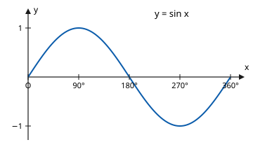
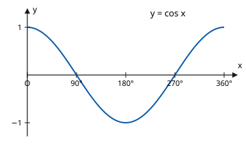
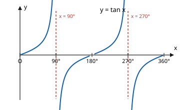
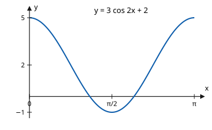
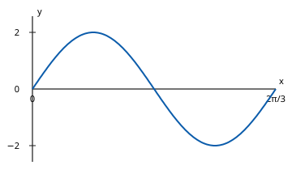

Based on Cambridge International AS & A Level Mathematics: Pure Mathematics 1 Coursebook (Sue Pemberton, series editor Julian Gilbey), Chapter 5 Trigonometry, printed pp.127–136 (physical PDF page = printed page + 12). Own wording and new numbers, following the coursebook treatment of the graphs of \(y=\sin x\), \(y=\cos x\) and \(y=\tan x\), and of transformations of those graphs.
Key words:amplitude, period, asymptote
The graphs of sine and cosine
If a point \(P\) moves around the unit circle, the coordinates of \(P\) are \((\cos x,\sin x)\). Plotting the height of \(P\) against the angle \(x\) gives the graph of \(y=\sin x\). Plotting the horizontal displacement of \(P\) against \(x\) gives the graph of \(y=\cos x\).

The graph of \(y=\sin x\) for \(0^\circ\le x\le 360^\circ\).

The graph of \(y=\cos x\) for \(0^\circ\le x\le 360^\circ\).
Both graphs repeat: a complete wave is traced as \(x\) increases by \(360^\circ\), or by \(2\pi\) radians. That interval is the period of the function. The greatest value of \(y=\sin x\) and of \(y=\cos x\) is \(1\), and the least value is \(-1\). Half the difference between the greatest and least values is the amplitude, so each of these graphs has amplitude \(1\).
The two graphs have the same shape. The cosine graph is the sine graph translated by \(90^\circ\) (or \(\frac{\pi}{2}\) radians) to the left:
\[\cos x=\sin\bigl(x+\tfrac{\pi}{2}\bigr).\]
The graph of tangent
The graph of \(y=\tan x\) is different. Because \(\tan x=\dfrac{\sin x}{\cos x}\), the function is undefined wherever \(\cos x=0\), that is at \(x=\pm 90^\circ,\pm 270^\circ,\ldots\) (or \(x=\pm\dfrac{\pi}{2},\pm\dfrac{3\pi}{2},\ldots\) in radians). The graph has a vertical asymptote at each of these values: the curve approaches the line but never meets it. Between consecutive asymptotes the curve is strictly increasing, and it crosses the \(x\)-axis midway between them. The period of \(y=\tan x\) is \(180^\circ\), or \(\pi\) radians. Tangent has no amplitude, because the values of \(y\) are not bounded.

The graph of \(y=\tan x\) for \(0^\circ\le x\le 360^\circ\). The dashed lines are vertical asymptotes at \(x=90^\circ\) and \(x=270^\circ\).
Transformations of trigonometric graphs
The standard graphs can be stretched and translated, just as other function graphs can. For a constant \(a>0\),
\(y=a\sin x\) and \(y=a\cos x\) have amplitude \(a\) and the same period as \(y=\sin x\) or \(y=\cos x\);
\(y=\sin(bx)\) and \(y=\cos(bx)\), with \(b>0\), have period \(\dfrac{360^\circ}{b}\) (or \(\dfrac{2\pi}{b}\) radians);
\(y=\tan(bx)\) has period \(\dfrac{180^\circ}{b}\) (or \(\dfrac{\pi}{b}\) radians), and its asymptotes are the images of those of \(y=\tan x\) under the same stretch in the \(x\)-direction;
\(y=\sin x+c\) is a translation of \(y=\sin x\) by \(c\) units parallel to the \(y\)-axis, so the greatest and least values each increase by \(c\);
\(y=\sin(x+d)\) is a translation of \(y=\sin x\) by \(d\) units to the left if \(d>0\), and to the right if \(d<0\).
These can be combined. For example, \(y=3\cos 2x+2\) has amplitude \(3\), period \(\pi\) (or \(180^\circ\)), and a midpoint line \(y=2\). Its greatest value is \(5\) and its least value is \(-1\).

The graph of \(y=3\cos 2x+2\) has amplitude \(3\) and is centred on \(y=2\).
Worked example 1: Amplitude, period and range
Coursebook, 5.4, style of the amplitude and period examples. New function \(y=4\sin 3x-1\).
State the amplitude, the period and the greatest and least values of \(y=4\sin 3x-1\).
The coefficient of sine is \(4\), so the amplitude is \(4\). The coefficient of \(x\) is \(3\), so the period is \(\dfrac{2\pi}{3}\) radians, or \(120^\circ\). B1
The graph of \(y=4\sin 3x\) has greatest value \(4\) and least value \(-4\). Translating by \(-1\) parallel to the \(y\)-axis gives greatest value \(3\) and least value \(-5\). A1
Answer: amplitude \(4\), period \(\dfrac{2\pi}{3}\) (or \(120^\circ\)), greatest value \(3\), least value \(-5\)
Worked example 2: A sine graph on a given interval
Coursebook, 5.4, graph-sketch style. New function \(y=2\sin 3x\) for \(0\le x\le\dfrac{2\pi}{3}\).
Sketch the graph of \(y=2\sin 3x\) for \(0\le x\le\dfrac{2\pi}{3}\), and state the greatest and least values of \(y\).
The amplitude is \(2\), so the greatest value is \(2\) and the least value is \(-2\). B1
The period is \(\dfrac{2\pi}{3}\), so the given interval is exactly one complete cycle. When \(x=0\), \(y=0\); when \(x=\dfrac{\pi}{6}\), \(y=2\); when \(x=\dfrac{\pi}{3}\), \(y=0\); when \(x=\dfrac{\pi}{2}\), \(y=-2\); when \(x=\dfrac{2\pi}{3}\), \(y=0\). The sketch is a sine wave starting and finishing at the origin, rising to \(2\) and falling to \(-2\). A1

One complete cycle of \(y=2\sin 3x\) for \(0\le x\le\dfrac{2\pi}{3}\).
Answer: greatest value \(2\), least value \(-2\); see the sketch.
Worked example 3: Asymptotes of a tangent graph
Coursebook, 5.4, tangent-graph style. New function \(y=\tan 2x\) for \(0\le x\le\pi\).
State the period of \(y=\tan 2x\) and the equations of the vertical asymptotes in the interval \(0\le x\le\pi\).
The period of \(y=\tan x\) is \(\pi\), so the period of \(y=\tan 2x\) is \(\dfrac{\pi}{2}\). B1
The asymptotes of \(y=\tan x\) occur at \(x=\dfrac{\pi}{2}+k\pi\). After a stretch of factor \(\dfrac{1}{2}\) parallel to the \(x\)-axis they occur at \(x=\dfrac{\pi}{4}+\dfrac{k\pi}{2}\). The values in the interval \(0\le x\le\pi\) are \(x=\dfrac{\pi}{4}\) and \(x=\dfrac{3\pi}{4}\). A1
Answer: period \(\dfrac{\pi}{2}\); asymptotes \(x=\dfrac{\pi}{4}\) and \(x=\dfrac{3\pi}{4}\)
Common mistakes
Taking the period of \(y=\sin(bx)\) to be \(b\), or \(360^\circ\times b\), instead of \(\dfrac{360^\circ}{b}\).
Giving an amplitude for \(y=\tan(bx)\). Tangent is unbounded, so it has no amplitude.
Drawing the graph of \(y=\tan x\) as a continuous wave that crosses the asymptotes, or placing the \(x\)-axis at the top or bottom of the diagram so that the branches are cut off.
Forgetting the vertical translation when stating the greatest and least values of \(y=a\sin(bx)+c\).
Past paper
9709/12/O/N/20 Q11, official QP and official MS.
A curve has equation \(y=3\cos 2x+2\) for \(0\le x\le\pi\).
(a) State the greatest and least values of \(y\). [2]
(b) Sketch the graph of \(y=3\cos 2x+2\) for \(0\le x\le\pi\). [2]
(c) By considering the straight line \(y=kx\), where \(k\) is a constant, state the number of solutions of the equation \(3\cos 2x+2=kx\) for \(0\le x\le\pi\) in each of the following cases.
(i) \(k=-3\) [1]
(ii) \(k=1\) [1]
(iii) \(k=3\) [1]
Functions \(f\), \(g\) and \(h\) are defined for \(x\in\mathbb{R}\) by
\[f(x)=3\cos 2x+2,\]
\[g(x)=f(2x)+4,\]
\[h(x)=2f\bigl(x+\tfrac{1}{2}\pi\bigr).\]
(d) Describe fully a sequence of transformations that maps the graph of \(y=f(x)\) on to \(y=g(x)\). [2]
(e) Describe fully a sequence of transformations that maps the graph of \(y=f(x)\) on to \(y=h(x)\). [2]
Mark scheme
(a) \(5\), \(-1\). B1B1 Official MS: B1 B1, sight of each value.
(b) The sketch is a curve (not straight line segments) showing one complete cycle starting and finishing at the candidate’s largest value. B1 Official MS: *B1, needs to be a curve, not straight lines; one complete cycle starting and finishing at their largest value.
(b) One complete cycle starting and finishing at \(y=5\) and going down to \(y=-1\), and starting to level off at least at one end. B1 Official MS: DB1.
(c)(i) \(0\) solutions. B1
(c)(ii) \(2\) solutions. B1
(c)(iii) \(1\) solution. B1
(d) Stretch by scale factor \(\dfrac{1}{2}\), parallel to the \(x\)-axis (or in the \(x\)-direction, or horizontally). B1
(d) Translation of \(\dbinom{0}{4}\) (or a translation \(4\) units in the positive \(y\)-direction). B1 Official MS: accept translation/shift.
(e) Translation of \(\dbinom{-\frac{\pi}{2}}{0}\) (or a translation \(\dfrac{\pi}{2}\) units in the negative \(x\)-direction). B1 Official MS: accept translation/shift.
(e) Stretch by scale factor \(2\), parallel to the \(y\)-axis (or vertically). B1
Past paper
9709/11/M/J/17 Q5, official QP and official MS.
The equation of a curve is \(y=2\cos x\).
(i) Sketch the graph of \(y=2\cos x\) for \(-\pi\le x\le\pi\), stating the coordinates of the point of intersection with the \(y\)-axis. [2]
Points \(P\) and \(Q\) lie on the curve and have \(x\)-coordinates of \(\dfrac{\pi}{3}\) and \(\pi\) respectively.
(ii) Find the length of \(PQ\) correct to 1 decimal place. [2]
The line through \(P\) and \(Q\) meets the \(x\)-axis at \(H\,(h,0)\) and the \(y\)-axis at \(K\,(0,k)\).
(iii) Show that \(h=\dfrac{5\pi}{9}\) and find the value of \(k\). [3]
Mark scheme
(i) The sketch is one complete cycle, starting and finishing at a negative value. B1 Official MS: B1, one whole cycle – starts and finishes at –ve value.
(i) The curve is smooth, flattens at the ends and the middle, and meets the \(y\)-axis at \((0,2)\). B1 Official MS: DB1, smooth curve, flattens at ends and middle. Shows \((0, 2)\).
(ii) \(P\left(\dfrac{\pi}{3},1\right)\) and \(Q(\pi,-2)\), so \(PQ^2=\left(\dfrac{2\pi}{3}\right)^2+3^2\). M1 Official MS: M1, Pythagoras (on their coordinates) must be correct, OE.
(ii) \(PQ=3.7\). A1 Official MS: \(PQ=3.7\).
(iii) The equation of \(PQ\) is \(y-1=-\dfrac{9}{2\pi}\left(x-\dfrac{\pi}{3}\right)\). M1 Official MS: M1, correct form of line equation or simultaneous equations from their \(P\) and \(Q\).
(iii) When \(y=0\), \(h=\dfrac{5\pi}{9}\). A1 Official MS: A1, AG, condone \(x=\dfrac{5\pi}{9}\).
(iii) When \(x=0\), \(k=\dfrac{5}{2}\). A1 Official MS: A1, \(k=\dfrac{5}{2}\). SR: non-exact solutions A1 for both.
Quick check 1
State the amplitude of \(y=2\sin x\).
Worked solution
The coefficient of sine is \(2\), so the amplitude is \(2\).
Answer: \(2\)
Quick check 2
State the period, in degrees, of \(y=\sin 2x\).
Worked solution
The period of \(y=\sin x\) is \(360^\circ\), so the period of \(y=\sin 2x\) is \(\dfrac{360^\circ}{2}=180^\circ\).
Answer: \(180\)
Quick check 3
State the greatest value of \(y=3\cos x+2\).
Worked solution
The greatest value of \(\cos x\) is \(1\), so the greatest value of \(y\) is \(3\times 1+2=5\).